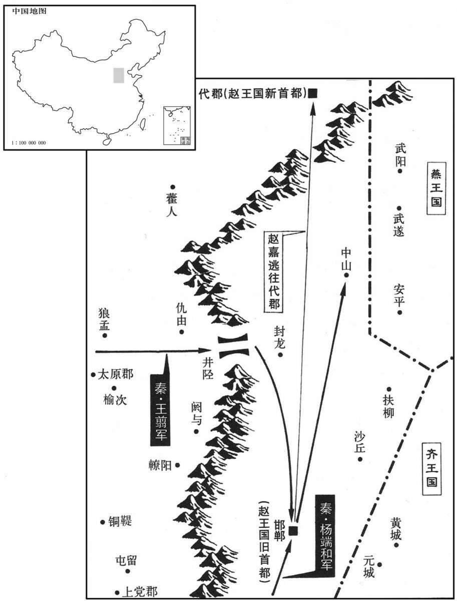

公元前229年资治通鉴：本年记事、原文与白话对照
按原书编年位置阅读；追叙和史论不等于本年发生的事件。白话采用所据译本，缺译不以生成译文补齐。
卷6 · 本年记事
公元前229年 · 始皇帝在位第18年
十八年〔（壬申、前二二九）〕
本年事件索引（现代整理）

本年形势与背景参考图
原文 · 胡三省注本
王翦将上地兵下井陉，〔史记正义曰：上郡上县，今绥州是也。余谓上地，以其地在大河上游，凡上郡抵西河之地，皆是也。应劭曰：井陉在常山郡井陉县西，唐谓之土门。将，即亮翻，又音如字。陉，音刑。〕端和将河内兵共伐赵。〔端和，即杨端和，此逸“杨”字。〕赵李牧、司马尚御之。秦人多与赵王嬖臣郭开金，〔嬖，卑义翻，又博计翻。〕使毁牧及尚，言其欲反。赵王使赵葱及齐将颜聚代之。〔姓谱：颜姓本自鲁伯禽支庶，有食采颜邑者，因而着族。又邾武公名夷，字曰颜，故公羊传称颜公，后以为氏。将，即亮翻。采，仓代翻。传，直恋翻。〕李牧不受命，赵人捕而杀之，废司马尚。
白话 · 所据译本
秦将王翦统率驻扎在上地的军队攻下井陉，杨端和率领河内驻军一同进攻赵国。赵国的大将李牧、司马尚领兵顽强抵抗秦军。于是，秦国派人用重金收买赵王的宠臣郭开，让他在赵王面前诋毁李牧和司马尚，说他们企图兴兵反叛赵国。赵王因此便派赵葱及齐国的将领颜聚取代他们。李牧不接受命令，赵国人便将他抓住杀了，并撤换了司马尚。